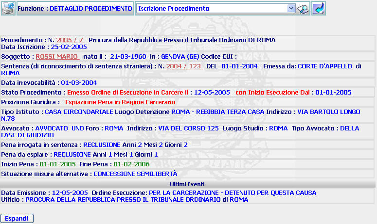
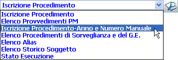
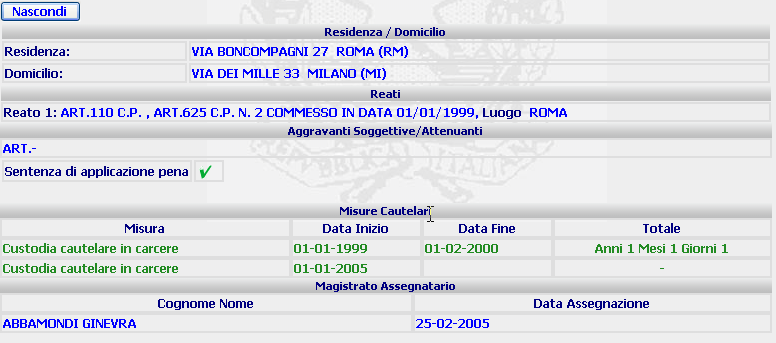

DETTAGLIO PROCEDIMENTO SIEP: La funzione, consente di visualizzare i dati inseriti e registrati relativi al Procedimento Siep del condannato. Inoltre si ha la possibilità di selezionare e svolgere le funzioni eseguibili in questo contesto
LE MASCHERE VIDEO
La funzione in esame viene realizzata attraverso l'utilizzo della seguente maschera che riporta gli elementi descrittivi del Procedimento Siep del condannato.

COME FARE PER ...
| Per visualizzare il dettaglio del procedimento SIEP l'utente deve cliccare sul link relativo all'Anno/Numero del procedimento Siep evidenziato in rosso; |
| Per visualizzare il dettaglio del soggetto l'utente deve cliccare sul link relativo al cognome/nome del soggetto evidenziato in rosso; |
| Per visualizzare il dettaglio della sentenza l'utente deve cliccare sul link relativo all' Anno/Numero della sentenza evidenziata in rosso; |
| Per eseguire, tramite il Menu a Tendina, una nuova funzione, coerente con il contesto applicativo in cui siamo, l'utente deve: |
selezionare, tramite la freccia a destra, le eventuali voci da inserire in tale campo. Non è possibile digitare del testo in questo campo.

cliccare sul pulsante
; si aprirà la maschera corrispondente alla funzione selezionata.
| Per visualizzare elementi ulteriori del procedimento l'utente deve cliccare sul pulsante . |
A fronte di questa operazione verranno visualizzati gli ulteriori elementi relativi al procedimento;

N.B. Per chiudere questa ulteriore visualizzazione l'utente deve cliccare sul pulsante .
CAMPI
Nella maschera sono presenti i seguenti campi.
| NOME | DESCRIZIONE |
| Funzione successiva | Selezionare tramite il menù a tendina la funzione successiva che si vuole eseguire |
PULSANTI
Oltre ai i pulsanti
 ,
,
 facenti parte del gruppo
di
pulsanti di "Uso Comune"
sono presenti
i
seguenti pulsanti:
facenti parte del gruppo
di
pulsanti di "Uso Comune"
sono presenti
i
seguenti pulsanti:
|
PULSANTE |
DESCRIZIONE |
|
|
A fronte di tale comando, viene eseguita la funzione selezionata nel Menu a Tendina. |
BOTTONI
Oltre ai comandi funzionali relativi al menù verticale sono presenti i seguenti comandi:
|
COMANDI |
DESCRIZIONE |
|
|
A fronte di tale comando, il sistema visualizza elementi ulteriori del procedimento; |
|
|
A fronte di tale comando, il sistema chiude la visualizzazione di elementi ulteriori del procedimento; |
CONTROLLI
In questa maschera non sono effettuati controlli.